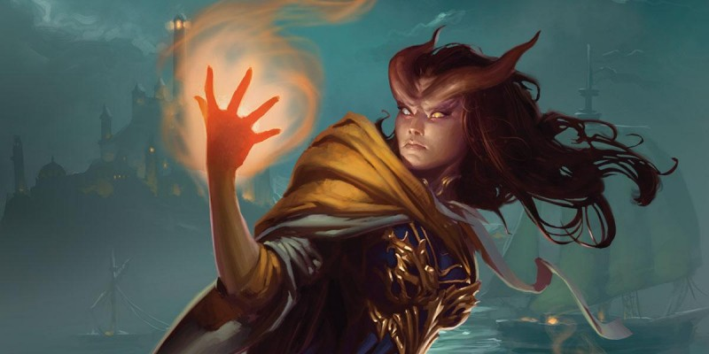

Sage Advice : Dons
Expert de la charge
Si l'on a le don Expert de la charge, peut-on faire une charge lorsque sa monture prend l'action Foncer ?
Le don Expert de la charge s'appuie sur le fait que vous, et non pas votre monture, prenez l'action Foncer.
Maître-arbalétrier
Est-ce intentionnel que le deuxième avantage de Maître-arbalétrier aide les attaques avec un sort ?
Oui, c'est intentionnel. Lorsque vous effectuez un jet d'attaque à distance à 1,50 mètre ou moins d'un ennemi, vous souffrez normalement d'un désavantage (PH p.195). Le deuxième avantage de Maître-arbalétrier vous empêche de souffrir de ce désavantage, que l'attaque à distance soit réalisée ou non avec une arbalète.
Lors de la conception d'un don d'utilisation étroite, nous considérons l'ajout d'au moins un élément qui puisse bénéficier plus largement à un personnage - un peu de maîtrise que votre personnage apporte d'une situation à une autre. Le deuxième avantage de Maître-arbalétrier est dans cette ligne, tout comme le premier avantage de Maître des armes à deux mains. Cet élément dans Maître-arbalétrier montre qu'une part de l'expertise du personnage avec un type de chose (les arbalètes dans ce cas) s'étend à d'autres choses.
Le premier et le troisième avantage de Maître-arbalétrier fait-il d'une arbalète de poing une arme semi-automatique ?
La réponse courte est non. Le premier avantage du don permet d'ignorer la propriété chargement (PH p.147) de l'arbalète de poing si vous maîtrisez cette arme. La conséquence en est que vous pouvez tirer plus d'une fois si vous possédez une capacité comme Attaque supplémentaire. Cependant, vous êtes toujours limité par le fait que l'arme a la propriété munitions (PH p.146), ce qui vous oblige à avoir un carreau pour tirer avec l'arbalète de poing, et celle-ci ne va pas se recharger toute seule (sauf si elle est magique ou qu'il s'agit d'une invention gnome). Vous devez charger chaque carreau dans l'arme, et cela nécessite une main.
Pour creuser plus profondément ce point, jetez un œil à la phrase suivante dans la définition de la propriété munitions : "Prendre la munition d'un carquois ou autre contenant similaire fait partie de l'attaque". La phrase nous dit deux choses importantes. Tout d'abord, vous êtes supposé extraire (c'est à dire prendre avec votre main) la munition d'un conteneur. Deuxièmement, le fait de prendre la munition est inclus dans l'attaque et ne nécessite donc pas d'action propre, ni d'utiliser une interaction libre avec un objet à votre tour.
Qu'est-ce que tout cela signifie pour une arbalète de poing ? Cela signifie que Maître-arbalétrier permet de tirer d'une arbalète de poing plus d'une fois avec une capacité comme Attaque supplémentaire, à condition que vous ayez assez de munitions et une main libre pour recharger à chaque tir.
Maître-arbalétrier permet-il de tirer d'une arbalète de poing puis de tirer de nouveau avec une action bonus ?
Oui ! Jetez un œil au troisième avantage du don. Il dit que vous pouvez attaquer avec une arbalète de poing en tant qu'action bonus lorsque vous utilisez l'action Attaquer pour attaquer avec une arme à une main. Une arbalète de poing est une arme à une main, donc en effet elle peut être utilisée pour les deux attaques, en supposant que vous ayez les mains libres pour recharger l'arbalète de poing entre les deux attaques.
Combattant à deux armes
Un personnage peut-il porter deux armes lourdes grâce au don Combattant à deux armes ?
Non. Le don Combattant à deux armes vous permet de porter deux armes à une main, or toutes les armes lourdes du Player's Handbook ont la propriété à deux mains.
Adepte élémentaire
Adepte élémentaire est-il le seul don que l'on peut prendre plusieurs fois ?
Adepte élémentaire est le seul don du Manuel des Joueurs que l'on peut prendre plusieurs fois.
Maître des armes à deux mains
Avec le don Maître des armes à deux mains, doit-on prendre l'action bonus immédiatement, ou peut-on bouger et ensuite l'utiliser lors du même tour ?
L'idée est que vous pouvez vous déplacer avant de prendre l'action bonus du don Maître des armes à deux mains.
Chanceux
Comment le don Chanceux interagit-il avec les avantages et les désavantages ?
Le don Chanceux représente une chance extraordinaire qui peut vous aider lorsque vous en avez le plus besoin. Cela vous permet de dépenser un point de chance ; lancer un d20 supplémentaire pour un jet d'attaque, de caractéristique ou de sauvegarde ; puis de choisir le d20 à utiliser. Et cela quel que soit le nombre de d20. Par exemple, si vous avez un avantage ou un désavantage à votre jet d'attaque, vous pouvez dépenser un point de chance, lancer un troisième d20, puis décider lequel des trois dés utiliser. Vous avez toujours un avantage ou un désavantage, puisque le don ne dit pas que cela l'annule, mais vous pouvez choisir le dé. Le résultat de ce fait est qu'un roublard, par exemple, qui a un désavantage à un jet d'attaque ne peut pas utiliser Attaque sournoise, même s'il utilise le don Chanceux pour choisir le dé. Le donc Chanceux est un excellent exemple d'exception à une règle générale. La règle générale dans ce cas est celle qui indique comment un avantage et un désavantage fonctionnent (PH p.173). La règle spécifique est le don chanceux, et une règle spécifique l'emporte sur une règle générale si elles entrent en conflit l'une avec l'autres (PH p.7).
Si un MD veut que les avantages/désavantages jouent leur rôle normal, même lorsque le don Chanceux est utilisé, voici un moyen de le faire : lancez deux d20 pour les avantages/désavantages, lancez un troisième d20 pour Chanceux, éliminez l'un des trois dés et puis utilisez le plus haut (pour un avantage) ou le plus bas (pour un désavantage) des deux dés qui restent.
Initié à la magie
Si je suis un lanceur de sorts, puis-je choisir ma propre classe lorsque je gagne le don Initié à la magie ?
Oui, le don ne dit pas que vous ne pouvez pas. Par exemple, si vous êtes un magicien et que vous gagnez le don Initié à la magie, vous pouvez choisir magicien et ainsi apprendre deux sorts mineurs de magicien de plus, ainsi qu'un sort de magicien de niveau 1.
Si j'ai des emplacements de sorts, puis-je les utiliser pour lancer le sort de niveau 1 que j'ai appris grâce au don Initié à la magie ?
Oui, mais seulement si la classe que vous choisissez pour le don est l'une de vos classes. Par exemple, si vous choisissez ensorceleur et que vous êtes un ensorceleur, la capacité Lanceur de sorts de cette classe dit que vous pouvez utiliser vos emplacements de sorts pour lancer les sorts d'ensorceleur que vous connaissez, de sorte que vous pouvez utiliser vos emplacements de sorts pour lancer le sort d'ensorceleur de niveau 1 que vous avez appris grâce au don Initié à la magie. De même, si vous êtes un magicien et choisir cette classe pour le don, vous apprenez un sort de magicien de niveau 1 que vous pouvez ajouter à votre grimoire et préparer par la suite.
En bref, vous devez suivre les règles normales de lanceur de sorts de votre personnage, lesquelles déterminent si vous pouvez dépenser des emplacements de sorts pour le sort de niveau 1 que vous apprenez avec Initié à la magie.
Maître d'hast
Puis-je ajouter mon modificateur de Force aux dégâts de l'attaque supplémentaire que Maître d'hast octroie ?
Oui ! Si vous avez le don et utilisez l'action Attaquer pour attaquer avec une coutille, une hallebarde ou un bâton, vous pouvez également frapper avec l'autre extrémité de l'arme par une action bonus. Pour cette attaque supplémentaire, vous ajoutez votre modificateur de caractéristique au jet d'attaque, comme vous le faites quand vous attaquez avec cette arme, et si vous touchez, vous ajoutez le même modificateur de caractéristique au jet de dégâts, ce qui est normal pour les jets de dégâts des armes (PH p.196).
Une règle spécifique, comme la règle de combat à deux armes (PH p.195) peut briser la règle générale en vous disant de ne pas ajouter votre modificateur de caractéristique aux dégâts. Mais Maître d'hast ne l'indique pas.
Le don Maître d'hast permet-il de réaliser une attaque d'opportunité contre une cible qui est forcée de s'approcher ?
Une créature ne provoque pas d'attaque d'opportunité si elle est déplacée sans utiliser son mouvement, son action ou sa réaction. Par exemple, l'effet du sort antipathie/sympathie fait que la cible utilise son mouvement, dont cela provoquerait une attaque d'opportunité. De même, murmures dissonants nécessite que la cible se déplace en utilisant sa réaction (si disponible), donc cela provoquerait également une attaque d'opportunité. En revanche, une créature qui est poussée par le sort bourrasque ne provoque pas d'attaques d'opportunité.
Attaquant sauvage
Le don Attaquant sauvage fonctionne-t-il avec les attaques à mains nues ?
Non. Attaquant sauvage s'applique aux dés de dégâts d'une arme, et les attaques à mains nues ne sont pas considérées comme une arme (comme cela a été clarifié dans l'errata du Manuel des Joueurs).
Le bénéfice du don Attaquant sauvage s'applique-t-il à d'autres effets supplémentaires comme l'Attaque sournoise du roublard ou le Châtiment divin du paladin ?
Non. Le bénéfice ne s'applique qu'aux jets de dégât des armes, pas aux dégâts supplémentaires octroyés par une capacité.
Sentinelle
L'attaque accordée par le troisième avantage du don Sentinelle a-t-elle lieu avant ou après l'attaque d'opportunité ?
L'attaque bonus a lieu après l'attaque d'opportunité. Voici pourquoi : le don ne précise pas le timing de l'attaque bonus, et quand une réaction n'a pas de timing spécifié, la réaction a lieu après que son déclenchement se finisse (DMG p.252). En revanche, une attaque d'opportunité a lieu spécifiquement avant que son déclenchement ne se finisse, c'est-à-dire juste avant que la créature cible ne quitte votre allonge (PH p.195).
Comment fonctionne le don Sentinelle face un ennemi qui dispose de Jeu de jambes sophistiqué ou du don Mobile ? Le personnage avec le don Sentinelle peut-il toujours tenter une attaque d'opportunité ?
Le second bénéfice du don Sentinelle s'applique uniquement en réaction à l'action Se désengager. Un ennemi avec Jeu de jambes sophistiqué (Sword Coast Adventurer’s Guide) ou possédant le don Mobile peut éviter l'attaque d'opportunité d'une personne possédant le don Sentinelle, tant que cet ennemi n'utiliser pas l'action Se désengager.
Maître des boucliers
Le don Maître des boucliers permet de pousser quelqu'un par une action bonus si l'on prend l'action Attaquer. Peut-on prendre cette action bonus avant l'action Attaquer ?
Non, l'action bonus fournie par le don Maître des boucliers a une condition préalable : vous devez effectuer l'action Attaquer à votre tour. L'intention d'effectuer cette action n'est pas suffisante ; vous devez réellement l'effectuer avant de pouvoir prendre l'action bonus. Pendant votre tour, vous décidez quand entreprendre l'action bonus après avoir effectué l'action Attaquer. Ce type de configuration "si-alors" apparaît dans de nombreuses règles du jeu. Le "si" doit être satisfait avant que le "alors" n'entre en jeu.
Robuste
Des capacités de classe et des dons affectent parfois la Forme sauvage d'un druide. Le don Robuste a-t-il un effet sur ce changement ?
L'idée est que non. Le don Robuste affecte les points de vie du druide, lesquels sont remplacés par les points de vie de la bête lorsqu'on utilise Forme sauvage.
Multiclassage
Les augmentations de caractéristiques dépendent-elles du niveau de la classe ou du niveau total ?
Les augmentations de caractéristiques sont basées sur votre niveau dans une classe particulière, et non pas sur votre niveau total si vous êtes multiclassé. Le tableau de votre classe indique à quel niveau vous obtenez une augmentation.
Est-ce qu'une augmentation de caractéristique temporaire satisfait la condition pour le multiclassage, ou faut-il que la valeur de base remplisse les conditions ?
L'intention est que votre valeur de base, et non pas une valeur temporaire, remplisse les conditions du multiclassage.
Quand on se multiclasse, obtient-on les sorts mineurs de toutes les classes ?
Si l'une de vos classes vous accorde des sorts mineurs, vous les obtenez.
Gagne-t-on des maîtrises de jets de sauvegarde quand on se multiclasse ?
Une classe offre diverses maîtrises de départ, que vous obtenez si c'est votre première classe. Si la classe n'est pas votre première, vous n'obtenez que les maîtrises de départ listées pour cette classe dans la table des maîtrises de multiclassage (PH p.164). Aucun jet de sauvegarde n'est inclus dans cette table. Quelle que soit votre première classe, vous gagnez quand même les maîtrises que les capacités de la classe vous offrent. Par exemple, si vous gagnez un niveau de clerc et choisissez le domaine de la Guerre, vous bénéficiez de la capacité Bonus de maîtrise même si le clerc n'est pas votre première classe.
Un barbare/clerc peut-il utiliser arme spirituelle pour attaquer durant sa rage, s'il a lancé ce sort avant de rentrer en rage ?
La Rage du barbare rend la concentration impossible, mais n'a aucun effet sur les sorts, comme arme spirituelle, qui ne nécessitent pas de concentration.
Un barbare/guerrier (maître de guerre) peut-il utiliser les manœuvres durant sa Rage ?
Rien dans la capacité de Rage du barbare n'exclue l'utilisation de manœuvres.
Un roublard/moine peut-il utiliser Attaque sournoise lors d'une attaque à mains nues ?
La capacité Attaque sournoise fonctionne avec les armes qui possèdent la propriété finesse ou à distance. Une attaque à mains nues n'est pas une arme, donc cela ne fonctionne pas. Par contre, un roublard/moine peut utiliser Attaque sournoise avec une arme de moine, comme l'épée courte ou la dague, qui possède une des propriétés demandées.
Un magicien se multiclasse en ensorceleur de magie sauvage. Les sorts lancés depuis son grimoire déclenchent-ils le Sursaut de magie sauvage s'ils sont aussi sur la liste de sorts de l'ensorceleur, ou faut-il les obtenir de l'ensorceleur pour le déclencher ?
Tirée des règles du multiclassage (PH p.164) : « Chaque sort que vous connaissez et que vous préparez est associé à une de vos classes ». Cette règle veut dire que seuls les sorts gagnés grâce à des niveaux d'ensorceleurs déclenchent le Sursaut de magie sauvage.

Traduction du Sage Advice Compendium v2.5